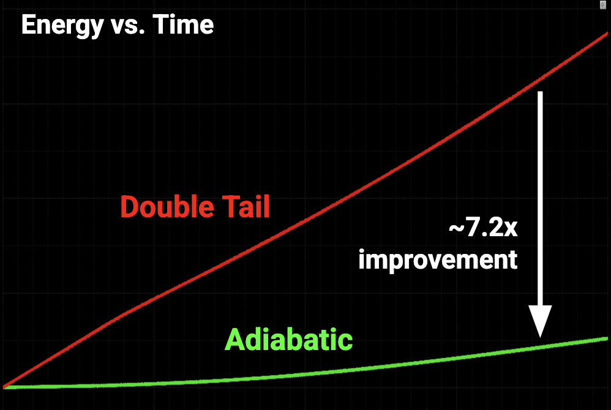
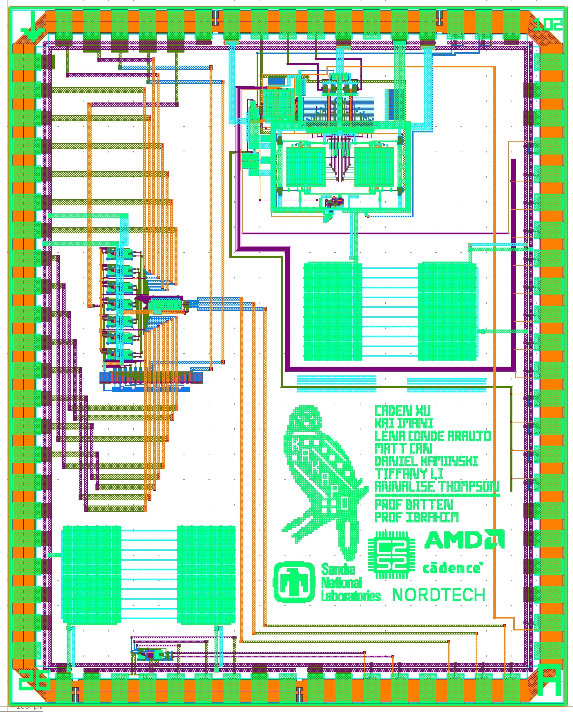
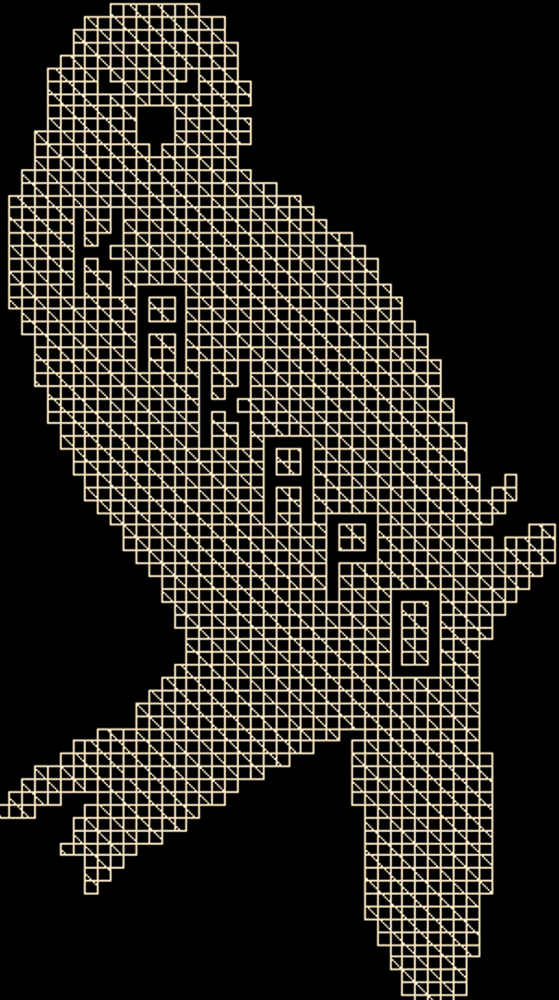
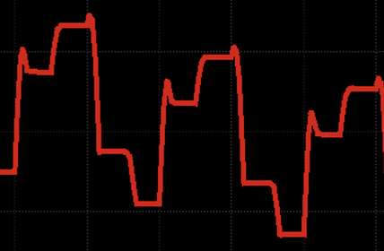
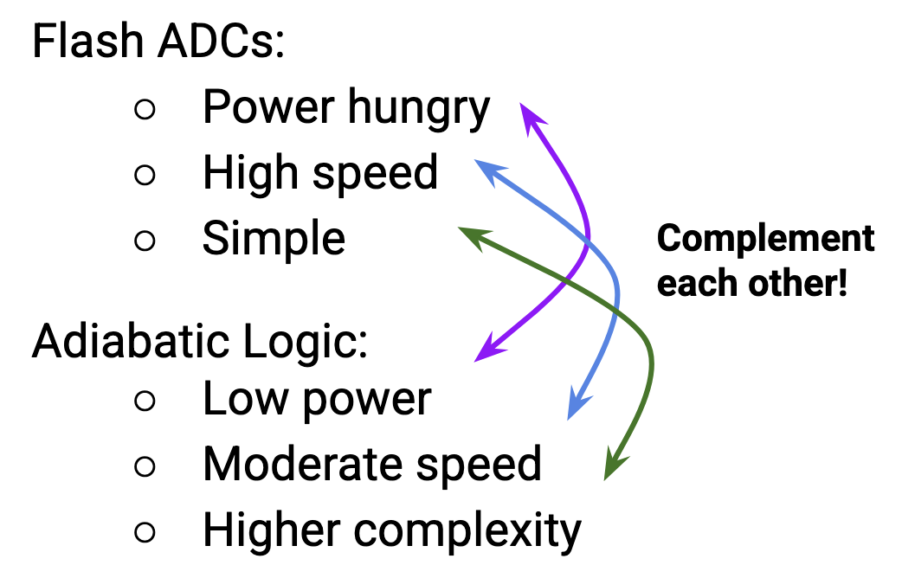
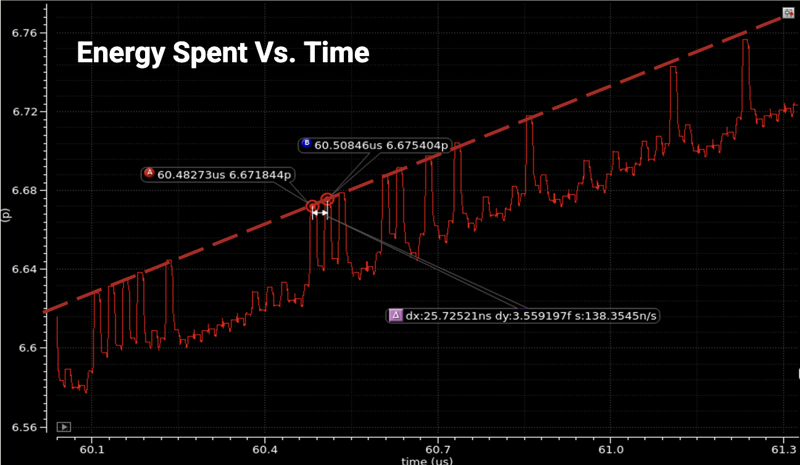

3-Bit 40MS/s "Adiabatic" Flash ADC




Project Overview
The most experimental of my tapeouts as part of C2S2 is a 40MS/S Adiabatic ADC, codename Kakapo. Over the previous year I had become very interested in the concept of adiabatic logic, which aims to return the energy used to make a computation to it's source once the result is no longer needed. To this end, many adiabatic logic families exists, most (if not all) of which use cyclical power signals, typically either sinusoidal or trapezoidal, which discharge the logic circuit back into it's source.
While this means adiabatic logic typically isn't static in the way CMOS is, it can enable enormous power savings. Since Flash ADCs are typically fast and simple but quite power intensive, they were an interesting avenue through which to explore the idea of adiabatic analog circuitry.

As the lead of this project, I was able to architect the design at a top level, and attempt to balance design novelty and safety. Since this was the team's first foray into adiabatic logic, and would explore novel concepts such as adiabatic comparators, I ended up making two key design decisions: limiting the ADC resolution to 3-bits, and using a simple resistor divider for reference voltage generation. The simplifications resulting from these decisions were key to taping out on time. However, as you may see in the technical report below, the power draw of the resistive voltage generation circuitry was negligible compared to that of the 7 comparators or several dozen digital standard cells (of the SCRL adiabatic logic family).
Where adiabatic concepts were used, success was found. As you can see in the below energy vs. time plots, energy was indeed returned to the system from the logic cells and adiabatic comparators. Compared to the previous adiabatic comparator project on this webpage, power draw was reduced from 37.5μW to 5.2μW, a more than 7x reduction, with only a 2x decrease bit-count.
Figure 1: Energy vs. Time of Adiabatic Double Tail Comparator

Figure 2: Energy vs. Time of SCRL NOR Gate
Due to the novelty of the adiabatic ADC concept, and the exploratory nature of this tapeout, I consider it to be on of my most complex and learning rich projects, from both a team/risk management and design standpoint. Testing is intended to begin once the chips return from TSMC in the fall of 2026.